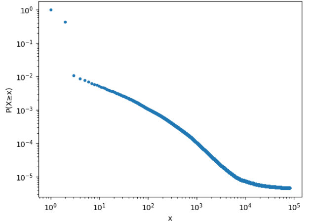
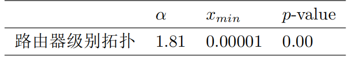
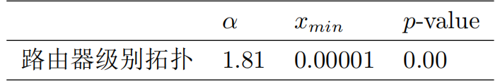

路由器拓扑的无标度性
如果在一个拓扑中，节点的度的CCDF分布是符合幂律分布的，那么就意味着在这个网络中很少的节点具有较高的度，绝大多数的节点的度数都很少。这种特性又被称之为无标度性（scale-free）。如果网络具有这样的特性，那么就说明在网络中很少的节点具有很强的关键性，这种网络特性既体现在针对随机故障的鲁棒性，又体现在针对蓄意攻击的脆弱性。因此识别网络中的关键节点，并予以保护就变得格外重要。



如图所示，展示了2019年1月路由器拓扑的节点度的互补累计分布（Complementary Cumulative Distribution Function,CCDF）的双log坐标轴下的曲线，以及路由器级别拓扑节点度的幂律分布模型参数及置信度。从结果可以看出，路由器级别的拓扑的度分布明显不符合幂律分布。